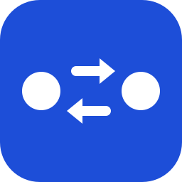
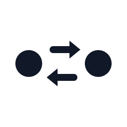
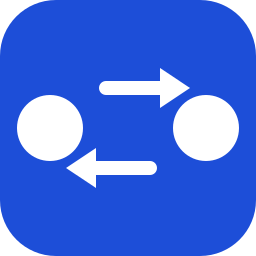
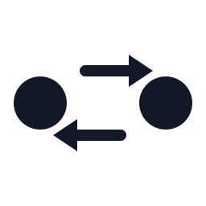
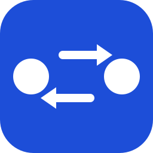
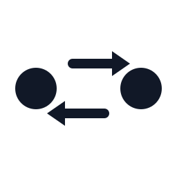
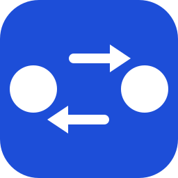
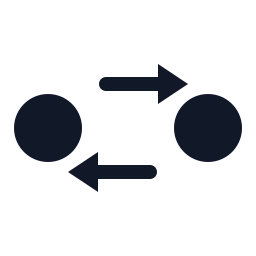

任务栏 20px · 深色底
上一版 V2 最大的问题确实是留白：内容垂直只占 y82–174（92px），上下各空 82px，
而左右只空 31px。横向撑满、纵向空一半，所以观感「扁」。
这一版把内容垂直撑到 y56–200（144px），上下留白降到 56px，与左右接近，构图从扁变方。
实心 · 改良
上一版
已选中的方案，但 上下留白 82px 明显过多。
圆 r27，上下箭头中心 y100/156，内容仅 92px 高。
横向留 31px、纵向留 82px，比例失衡 2.6 倍。
 32
32

实心 · 撑满
Full bleed
圆 r27→33，箭头中心 y100/156→88/168，箭杆加长到 66px。 内容从 92px 撑到 144px，上下留白 82→56px。 比例最接近标准应用图标的 8:8:8 视觉安全区。


实心 · 长箭
Long shaft
圆 r30，箭杆拉到 76px，箭头相对收小。 内容垂直 128px，上下留白 64px，左右 22px。 箭杆最长，气质最「延伸」，适合强调数据流动。
 32
32

实心 · 大圆
Bold dots
圆放到 r34，端点存在感最强，箭杆相对短。 内容垂直 152px，上下留白 52px、左右 14px。 三个里最「重」、最不像加载中图标，但左右偏满。
 32
32

蓝色实心方块是 256×256 画布，灰色虚线框是图形内容的外接矩形。 数字标注四侧留白。四个数越接近，构图越平衡——这是这一版的核心度量。
「四侧差值」= max(上下, 左右) − min(上下, 左右)，越小越接近方形构图。上一版差 51px，明显失衡。
| 方案 | 圆半径 | 内容垂直 | 上下留白 | 左右留白 | 四侧差值 |
|---|---|---|---|---|---|
| V2（上一版） | 27 | 92px | 82px | 31px | 51px |
| R1 撑满 | 33 | 144px | 56px | 33px | 23px |
| R2 长箭 | 30 | 128px | 64px | 38px | 26px |
| R3 大圆 | 34 | 152px | 52px | 28px | 24px |
撑满之后圆与箭头更接近，需确认净空没有被压缩过头。
顺序：V2（上版）/ R1 / R2 / R3。